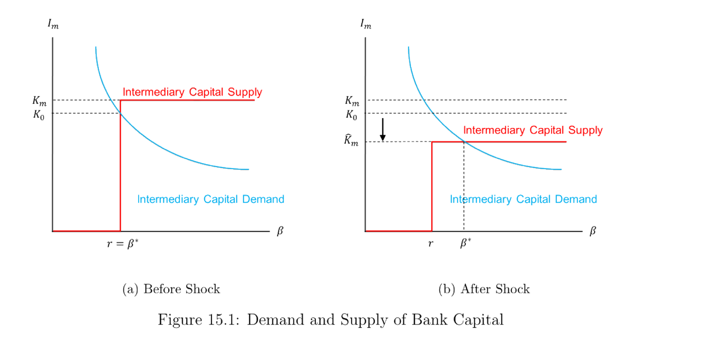

15. Liability Side of Banking
本章主题：银行的负债端。 三个模型刻画存款的作用。§15.1 Diamond-Dybvig (1983) 流动性创造与银行挤兑：家庭面临异质流动性冲击（早型 \(\theta=1\) 只在 \(T{=}1\) 消费、晚型 \(\theta=2\) 在 \(T{=}2\) 消费）；短期无风险技术 vs 长期高回报技术（早提取损失价值）。银行通过大数定律完全保险，竞争性最优解满足 \(u'(c_1^\star)=\rho R\,u'(c_2^\star)\) (15.2)、\(c_1^\star §15.3 Holmstrom-Tirole (1997) 银行资本决定信贷供求：直接融资下企业须有最低净值 \(\bar A=I-\frac{p_H}{r}(R-\frac{B}{\Delta p})\) (15.12)；中介融资引入银行监督（消除坏项目，但银行也需监督激励 \(R_m\ge C/\Delta p\)），最低净值 \(\underline A=\bar A_{agency}+\frac{p_H}{r}\frac{C}{\Delta p}(1-\frac r\beta)\) (15.22)（含银行代理成本）。银行贷款需求 \(I_m(\beta)=\frac{p_H C}{\beta\Delta p}\) (15.21)，与水平资本供给交于 \(\beta^\star\)（图 15.1）；危机中银行资本 \(K_m\downarrow\to\beta^\star\uparrow\)、信贷收缩（集约 + 广延边际）——银行资本波动驱动实体投资波动，体现中介资产定价。
Chapter theme: the liability side of banking. Three models on the role of deposits. §15.1 Diamond-Dybvig (1983) liquidity creation and bank runs: households face idiosyncratic liquidity shocks (early type \(\theta=1\) consumes only at \(T{=}1\), late type \(\theta=2\) at \(T{=}2\)); a short-term riskless technology vs a long-term high-return one (early withdrawal destroys value). A bank fully insures by the LLN, and the competitive optimum satisfies \(u'(c_1^\star)=\rho R\,u'(c_2^\star)\) (15.2), \(c_1^\star §15.3 Holmstrom-Tirole (1997) bank capital determines credit supply/demand: under direct finance, a firm needs a minimum net worth \(\bar A=I-\frac{p_H}{r}(R-\frac{B}{\Delta p})\) (15.12); intermediated finance adds bank monitoring (eliminating the bad project, but the bank also needs a monitoring incentive \(R_m\ge C/\Delta p\)), with a minimum net worth \(\underline A=\bar A_{agency}+\frac{p_H}{r}\frac{C}{\Delta p}(1-\frac r\beta)\) (15.22) (including bank agency cost). Bank-loan demand is \(I_m(\beta)=\frac{p_H C}{\beta\Delta p}\) (15.21), meeting a horizontal capital supply at \(\beta^\star\) (Figure 15.1); in a crisis bank capital \(K_m\downarrow\to\beta^\star\uparrow\) and credit contracts (intensive + extensive margins) — bank-capital fluctuations drive real-investment fluctuations, embodying intermediary asset pricing.
15.1 Bank's Debt: Liquidity Creation and Bank Run — Diamond and Dybvig (1983)
大萧条期间（美国 1929–1933），实际 GDP 跌 34%、物价跌 24%、银行存款跌 48.2%。当时美联储已成立（1910 年代），但尚无存款保险。我们在此背景下考察银行挤兑问题。Diamond and Dybvig (1983) 以家庭流动性冲击为模型，理解银行如何为福利改善而创造流动性，并解释银行挤兑可以是一个自我实现的预言、由银行本身毫无基本面问题所引致。简言之：银行通过为消费灵活性创造流动性而改善福利，却也因此受自我实现的挤兑之苦。
15.1.1 设定. 三期 \(T=0,1,2\)。两种技术（家庭与银行均可用）：
- 技术 A（短期无风险储蓄）：\(T=0\) 存 1 单位，\(T=1\) 还 1 单位；\(T=1\) 存 1 单位，\(T=2\) 还 1 单位。
- 技术 B（长期有风险投资）：\(T=0\) 存 1 单位，若 \(T=1\) 取出还 \(\pi\le1\)，若 \(T=2\) 取出还 \(R>1\)。聚焦 \(\pi=1\) 的情形（此时长期早取 = 短期，短期技术冗余，故所有人都投长期技术）。
长期技术仅有流动性风险（\(T=1\) 早取使价值从 \(R\) 降到 1），但对 \(R\) 毫无不确定性。
- 银行：\(T=0\) 吸收家庭存款、投于长期技术，提供期限转换——把短期流动性需求的存款投向长期生产。
- 家庭：$[0,1]$ 连续统，各受 i.i.d. 流动性冲击 \(\theta\)（\(T=1\) 初揭示）：以概率 \(\alpha\)，\(\theta=1\)（早型，只享 \(T=1\) 消费）；以概率 \(1-\alpha\)，\(\theta=2\)（晚型，享 \(T=1\) 与 \(T=2\) 消费）。偏好：
$$u(c_1,c_2)=\begin{cases}u(c_1) & \text{if }\theta=1\\[2pt] \rho\,u(c_1+c_2) & \text{if }\theta=2\end{cases}$$
其中 \(\rho<1\)、\(R\rho>1\)，\(u'>0\)、\(u''<0\)。每户 \(T=0\) 有禀赋 1。银行 \(T=0\) 宣布：\(T=1\) 取付 \(y_1\ge1\)，\(T=2\) 取付 \(y_2>y_1\)；若 \(\alpha\) 比例在 \(T=1\) 提取，银行清算 \(\alpha y_1\) 比例长期资产，余 \((1-\alpha y_1)R\) 在 \(T=2\) 付给剩余 \(1-\alpha\) 比例。
During the Great Depression (U.S. 1929–1933), real GDP dropped 34%, prices 24%, and bank deposits 48.2%. The Fed had already been established (in the 1910s), but there was no deposit insurance at the time. We consider the bank-run problem under this background. Diamond and Dybvig (1983) provide a model with household liquidity shocks to understand how banks create liquidity for welfare improvement, and to explain a bank run as a self-fulfilling prophecy caused by no fundamental problem in banks at all. In a nutshell: a bank improves welfare by creating liquidity for consumption flexibility, but suffers from a self-fulfilling run.
15.1.1 Setup. Three periods \(T=0,1,2\). Two technologies (available to both households and banks):
- Technology A (short-term riskless saving): 1 unit deposited at \(T=0\) pays 1 unit at \(T=1\); 1 unit at \(T=1\) pays 1 unit at \(T=2\).
- Technology B (long-term risky investment): 1 unit at \(T=0\) pays \(\pi\le1\) if taken out at \(T=1\), and \(R>1\) if taken out at \(T=2\). We focus on \(\pi=1\) (then early withdrawal of the long technology equals the short one, the short technology is redundant, and all invest in the long technology).
The long technology only has liquidity risk (early \(T=1\) withdrawal destroys value from \(R\) to 1), but no uncertainty over \(R\) at all.
- The bank: takes deposits at \(T=0\), invests in the long technology, providing maturity transformation — investing short-term-liquidity deposits into long-term production.
- Household: a continuum on $[0,1]\(, each subject to an i.i.d. liquidity shock \)\theta$ (revealed at the start of \(T=1\)): with probability \(\alpha\), \(\theta=1\) (early type, enjoys only \(T=1\) consumption); with probability \(1-\alpha\), \(\theta=2\) (late type, enjoys \(T=1\) and \(T=2\)). Preferences:
$$u(c_1,c_2)=\begin{cases}u(c_1) & \text{if }\theta=1\\[2pt] \rho\,u(c_1+c_2) & \text{if }\theta=2\end{cases}$$
with \(\rho<1\), \(R\rho>1\), \(u'>0\), \(u''<0\). Each household has endowment 1 at \(T=0\). The bank announces at \(T=0\): pay \(y_1\ge1\) if withdrawn at \(T=1\), \(y_2>y_1\) at \(T=2\) if not; if \(\alpha\) proportion withdraw at \(T=1\), the bank liquidates \(\alpha y_1\) proportion of the long asset, with \((1-\alpha y_1)R\) paid at \(T=2\) to the remaining \(1-\alpha\) proportion.
15.1.2 Without Bank (Autarky) and 15.1.3 With Bank (Risk Sharing)
15.1.2 自给自足. 家庭自投长期技术，早型 \(T=1\) 取得 1、晚型 \(T=2\) 取得 \(R\)，期望效用
$$\mathbb{E}[u(c_1,c_2)]=\alpha\,u(1)+(1-\alpha)\rho\,u(R)$$
这是个体被动接受的支付，无法对冲冲击。
15.1.3 有银行：流动性创造与风险分担. 银行有连续统客户，由大数定律完全保险；市场竞争 → 银行提供可行的最优政策，即规划者问题：
$$\max_{c_1,c_2}\ \alpha\,u(c_1)+(1-\alpha)\rho\,u(c_2)\quad\text{s.t.}\quad \alpha c_1+(1-\alpha)\frac{c_2}{R}=1 \tag{15.1}$$
（(15.1) 为零利润保本；因大数定律社会结果确定，无期望符号。）拉格朗日一阶条件合并：
$$\frac{(1-\alpha)\rho\,u'(c_2^\star)}{\alpha\,u'(c_1^\star)}=\frac{(1-\alpha)\frac1R}{\alpha}\ \Rightarrow\ u'(c_1^\star)=\rho R\,u'(c_2^\star) \tag{15.2}$$
由 \(R\rho>1\)、\(u''<0\)：
$$c_1^\star 聚焦 CRRA \(u(c)=\frac{c^{1-\sigma}}{1-\sigma}\)（\(\sigma>0\)）。则 (15.2) 给 $$\left(\frac{c_2^\star}{c_1^\star}\right)^\sigma=\rho R\ \Rightarrow\ c_2^\star=c_1^\star(\rho R)^{\frac1\sigma} \tag{15.4}$$ 由 (15.4) 与 (15.1) 解出 \(c_1^\star=\dfrac{1}{\alpha+(1-\alpha)\rho^{1/\sigma}R^{1/\sigma-1}}\)。\(c_1^\star>1\) 的条件为 $$c_1^\star>1\ \Leftrightarrow\ \alpha+(1-\alpha)\rho^{\frac1\sigma}R^{\frac1\sigma-1}<1\ \Leftrightarrow\ \rho^{\frac1\sigma}R^{\frac1\sigma-1}<1\ \Leftrightarrow\ \rho 加上 (15.5) 这一合理约束，得 $$1 这对挤兑分析至关重要。 流动性创造：长期技术在 \(T=1\) 的流动性 = 可在 \(T=1\) 以接近 \(T=2\) 基本价 \(R\) 的价格卖出（零贴现下 \(R\) 是 \(T=1\) 基本价）。无银行时 \(T=1\) 价格仅 1；有银行时 \(T=1\) 价格为 \(c_1^\star>1\)——银行创造流动性。隐藏个体类型 = 挤兑之源：\(\theta\) 的概率 \(\alpha\) 已知，但个体冲击隐藏；银行无法阻止 \(\theta=2\) 的家庭在 \(T=1\) 提取 \(c_1^\star>1\)。
15.1.2 Autarky. A household invests long itself, getting 1 if early (\(T=1\)) and \(R\) if late (\(T=2\)), with expected utility
$$\mathbb{E}[u(c_1,c_2)]=\alpha\,u(1)+(1-\alpha)\rho\,u(R)$$
This is the payoff a household takes as given; as an individual it cannot insure against the shocks.
15.1.3 With bank: liquidity creation and risk sharing. The bank has a continuum of customers, fully insuring by the LLN; with competition it offers the best feasible policy, the planner's problem:
$$\max_{c_1,c_2}\ \alpha\,u(c_1)+(1-\alpha)\rho\,u(c_2)\quad\text{s.t.}\quad \alpha c_1+(1-\alpha)\frac{c_2}{R}=1 \tag{15.1}$$
((15.1) is zero-profit break-even; no expectation since the social outcome is deterministic by the LLN.) Combining the Lagrangian f.o.c.s:
$$\frac{(1-\alpha)\rho\,u'(c_2^\star)}{\alpha\,u'(c_1^\star)}=\frac{(1-\alpha)\frac1R}{\alpha}\ \Rightarrow\ u'(c_1^\star)=\rho R\,u'(c_2^\star) \tag{15.2}$$
Since \(R\rho>1\), \(u''<0\):
$$c_1^\star Focus on CRRA \(u(c)=\frac{c^{1-\sigma}}{1-\sigma}\) (\(\sigma>0\)). Then (15.2) gives $$\left(\frac{c_2^\star}{c_1^\star}\right)^\sigma=\rho R\ \Rightarrow\ c_2^\star=c_1^\star(\rho R)^{\frac1\sigma} \tag{15.4}$$ Solving \(c_1^\star=\dfrac{1}{\alpha+(1-\alpha)\rho^{1/\sigma}R^{1/\sigma-1}}\) from (15.4) and (15.1). The condition \(c_1^\star>1\) is $$c_1^\star>1\ \Leftrightarrow\ \alpha+(1-\alpha)\rho^{\frac1\sigma}R^{\frac1\sigma-1}<1\ \Leftrightarrow\ \rho^{\frac1\sigma}R^{\frac1\sigma-1}<1\ \Leftrightarrow\ \rho Imposing the reasonable additional condition (15.5), $$1 which is crucial for the run analysis. Liquidity creation: the long technology's liquidity at \(T=1\) = being sold at \(T=1\) at a price close to the \(T=2\) fundamental \(R\) (with zero discount, \(R\) is the \(T=1\) fundamental price). Without a bank, the \(T=1\) price is only 1; with a bank, it is \(c_1^\star>1\) — the bank creates liquidity. Hidden individual type = the source of runs: the probability \(\alpha\) of \(\theta\) is known, but the individual shock is hidden; the bank cannot stop a \(\theta=2\) household from withdrawing \(c_1^\star>1\) at \(T=1\).
15.1.4 Two Equilibria and 15.1.5 The Bank Run Problem
存在两个可能均衡：
- 好均衡：家庭不挤兑，按冲击行事（仅 \(\theta=1\) 在 \(T=1\) 提取，\(\theta=2\) 等到 \(T=2\)）。
- 坏均衡：人人担心拿不回钱，无论 \(\theta\) 都齐挤 \(T=1\)；银行破产，仅付一部分家庭全额，其余全损。
挤兑机制. 由 (15.6) \(1
两种排除坏均衡的办法：
- 外部存款保险：一旦保证钱如约安全，\(\theta=2\) 家庭无激励在 \(T=1\) 提取，故只有 \(\theta=1\) 在 \(T=1\) 提取。
- 暂停兑付 (suspension of convertibility)：银行 \(T=0\) 宣布——若 \(T=1\) 来取的人太多，仅付前 \(\alpha\) 比例，其后排队者直到 \(T=2\) 才得款。如此 \(\theta=2\) 无激励在 \(T=1\) 提取（知道 \(T=2\) 有足够钱付 \(c_2^\star\)，不愿在 \(T=1\) 承受 \(R\to1\) 的消费损失）。
There are two possible equilibria:
- Good equilibrium: households don't run, simply follow shocks (only \(\theta=1\) withdraws at \(T=1\), \(\theta=2\) waits to \(T=2\)).
- Bad equilibrium: everyone, worried about getting their money, withdraws at \(T=1\) regardless of \(\theta\); the bank goes bankrupt, paying only a fraction of households in full while the rest suffer total loss.
The run mechanism. By (15.6) \(1
Two ways to rule out the bad equilibrium:
- External deposit insurance: once money is guaranteed safe as promised, a \(\theta=2\) household has no incentive to withdraw at \(T=1\), so only \(\theta=1\) withdraws at \(T=1\).
- Suspension of convertibility: the bank announces at \(T=0\) — if too many show up at \(T=1\), it pays only the first \(\alpha\) fraction, and those after get nothing until \(T=2\). Then a \(\theta=2\) household has no incentive to withdraw at \(T=1\) (knowing there's enough to pay \(c_2^\star\) at \(T=2\), unwilling to suffer the \(R\to1\) consumption loss).
Remarks (15.1) and 15.1.6 Discussion (Jacklin 1987)
Remarks 15.1–15.5
15.1：银行通过生成更平的短/长期总回报收益率曲线 \((c_1^\star,c_2^\star)\)（相对 \((1,R)\)）贡献社会福利。15.2：挤兑的关键启示——我们唯一可惧的是恐惧本身。15.3：\(c_1^\star>1\) 蕴含 \(c_2^\star
15.1.6 讨论（Jacklin 1987）. 设 \(T=1\) 冲击实现后有一个交易活期银行存款的竞争市场，则该市场与银行解 \((c_1^\star,c_2^\star)\) 不能共存——银行解被如下策略支配：投资者 A 在 \(T=0\) 自投长期技术；若 \(\theta=2\)，A 很高兴（可得 \(R>c_2^\star\)）；若 \(\theta=1\)，A 把其 \(T=2\) 的 \(R\) 索取权以价格卖给 \(\frac{R}{c_2^\star}>1\) 个「晚型」家庭、在 \(T=1\) 得 \(\frac{R}{c_2^\star}>1\)（优于存银行只得 \(c_1^\star\)）。故人人采此策略，均衡中无人存银行。
Diamond-Dybvig (1983) 的其他批评（由 Calomiris-Kahn 1991 讨论）：(1) 忽视了银行倒闭常不只因流动性冲击、还因银行家偷窃等舞弊；(2) 未认识到挤兑并非随机自我实现、而常由知情储户的提取所发起。
Remarks 15.1–15.5
15.1: the bank contributes to welfare by generating a flatter yield curve of short/long gross returns \((c_1^\star,c_2^\star)\) (vs \((1,R)\)). 15.2: the key takeaway from runs — the only thing to fear is fear itself. 15.3: \(c_1^\star>1\) implies \(c_2^\star
15.1.6 Discussion (Jacklin 1987). Suppose there's a competitive market at \(T=1\) (after the shock) trading the demandable bank deposit. Then this market and the banking solution \((c_1^\star,c_2^\star)\) cannot co-exist — the banking solution is dominated by: investor A invests long itself at \(T=0\); if \(\theta=2\), A is happy (gets \(R>c_2^\star\)); if \(\theta=1\), A sells its \(T=2\) claim of \(R\) to \(\frac{R}{c_2^\star}>1\) "late" households and gets \(\frac{R}{c_2^\star}>1\) at \(T=1\) (better than the bank's \(c_1^\star\)). So everyone follows this, and no one deposits in the bank in equilibrium.
Other critiques of Diamond-Dybvig (1983) (discussed by Calomiris-Kahn 1991): (1) it ignores that bank failure is often not just from a liquidity shock but also fraud (e.g. banker stealing); (2) it doesn't recognize that runs are not randomly self-fulfilling but are often initiated by withdrawals of informed depositors.
15.2 Bank's Debt: Bank Run Deters Absconding — Calomiris and Kahn (1991)
主旨：可挤兑的活期存款给银行家「不偷」、给储户「监督」的正确激励。
15.2.1 设定. 三期 \(t=0,1,2\)。银行只有一个项目，\(t=0\) 需投资 \(Y\)，仅 \(t=2\) 有支付 \(R^H Y\) 或 \(R^L Y\)；\(\tilde R\in\{R^H,R^L\}\) 市场不可观测；银行家可从银行卷走 (steal) \((1-\alpha)\tilde R Y\)。\(Z\) 个投资者：\(t=0\) 各存 1；\(t=1\) 可付成本 \(I\) 获信息，信息为信号 \(\sigma\in\{g,b\}\)（私下揭示），先验 \(\lambda\) 为 \(g\)、\(1-\lambda\) 为 \(b\)；\(R^H\) 在信号 \(\sigma\) 下的概率 \(\rho_\sigma\)，\(\rho_g>\gamma>\rho_b\)（\(\gamma\) 为先验）。持信息者可报 \(\hat\sigma=\hat g\) 或 \(\hat b\)（不论真信息），报 \(\hat\sigma\) 而真信息 \(\sigma\) 的效用记 \(U(\hat\sigma,\sigma)\)。均衡中 \(K\) 个投资者活跃（获信息）、\(Z-K\) 个瞌睡（不获），瞌睡者视为总报 \(\hat\sigma=\hat g\)。
15.2.2 银行家卷款潜逃. 银行家须在 \(t=2\) 还投资者 \(P\)。若不被抓地卷走 \((1-\alpha)\tilde R Y\) 有利可图则会偷：
$$(1-\alpha)\tilde R Y>\tilde R Y-P\ \Rightarrow\ \tilde R<\frac{P}{\alpha Y}$$
即回报 \(\tilde R\) 低时倾向潜逃，投资者皆知此规则。
15.2.3 约束. 瞌睡者 IR：\(\lambda U(\hat g,g)+(1-\lambda)U(\hat g,b)=1\)；活跃者讲真话 IR：\(\lambda U(\hat g,g)+(1-\lambda)U(\hat b,b)=1+r\)；活跃者讲真话 IC：\(\lambda U(\hat g,g)+(1-\lambda)U(\hat b,b)\ge\lambda U(\hat g,b)+(1-\lambda)U(\hat b,g)\)。
15.2.4 最优合约. 由揭示原理与简单代数，Calomiris-Kahn (1991) 证明最优合约满足：部分投资者选择获信号、其余不获；所有报 \(\hat\sigma=\hat b\) 者在 \(t=1\) 得常数支付 \(R\)；所有报 \(\hat\sigma=\hat g\) 者在 \(t=2\) 瓜分剩余；若总提取超过 \(\underline N R\) 则银行被低效清算。此最优合约恰是活期存款：银行的顺序服务约束是关键，它给投资者监督激励；活期存款的脆弱性（挤兑威胁）也给经理人反潜逃激励。
Main idea: a runnable demandable deposit gives bankers the right incentive not to steal and depositors to monitor.
15.2.1 Setup. Three periods \(t=0,1,2\). The bank has one project, needs investment \(Y\) at \(t=0\), with payoff \(R^H Y\) or \(R^L Y\) only at \(t=2\); \(\tilde R\in\{R^H,R^L\}\) unobservable to the market; the banker can steal \((1-\alpha)\tilde R Y\) from the bank. \(Z\) investors: each deposits 1 at \(t=0\); at \(t=1\) each can acquire information at cost \(I\), a signal \(\sigma\in\{g,b\}\) (privately revealed), with prior \(\lambda\) for \(g\) and \(1-\lambda\) for \(b\); the probability of \(R^H\) under signal \(\sigma\) is \(\rho_\sigma\), with \(\rho_g>\gamma>\rho_b\) (\(\gamma\) the prior). An informed investor can report \(\hat\sigma=\hat g\) or \(\hat b\) (regardless of the truth), with utility \(U(\hat\sigma,\sigma)\) of reporting \(\hat\sigma\) while truly knowing \(\sigma\). In equilibrium \(K\) investors are active (acquire info), \(Z-K\) sleepy (don't), with sleepy investors treated as always reporting \(\hat\sigma=\hat g\).
15.2.2 Banker's absconding. The banker must repay \(P\) to investors at \(t=2\). If absconding with \((1-\alpha)\tilde R Y\) uncaught is profitable, he steals:
$$(1-\alpha)\tilde R Y>\tilde R Y-P\ \Rightarrow\ \tilde R<\frac{P}{\alpha Y}$$
i.e. he tends to abscond when the return \(\tilde R\) is low; all investors know this rule.
15.2.3 Constraints. Sleepy IR: \(\lambda U(\hat g,g)+(1-\lambda)U(\hat g,b)=1\); active truth-telling IR: \(\lambda U(\hat g,g)+(1-\lambda)U(\hat b,b)=1+r\); active truth-telling IC: \(\lambda U(\hat g,g)+(1-\lambda)U(\hat b,b)\ge\lambda U(\hat g,b)+(1-\lambda)U(\hat b,g)\).
15.2.4 Optimal contract. By the revelation principle and simple algebra, Calomiris-Kahn (1991) show the optimal contract satisfies: some investors choose to acquire signals while others don't; all who report \(\hat\sigma=\hat b\) get a constant payoff \(R\) at \(t=1\); all who report \(\hat\sigma=\hat g\) split the remaining payoff at \(t=2\); the bank is inefficiently liquidated if total withdrawal exceeds \(\underline N R\). This optimal contract is exactly a demandable deposit: the bank's sequential service constraint is key, providing monitoring incentives to investors; the fragility (run threat) of the demand deposit also provides anti-absconding incentives to managers.
15.3 Bank's Equity Determines Bank Capital Supply and Demand — Holmstrom and Tirole (1997)
15.3.1 银行资本的作用. 银行资本一般是吸收损失的缓冲（在 Calomiris-Kahn 中瞌睡投资者充当吸损的权益持有者）。无项目不确定性时，活期储户的潜在挤兑约束银行家，挤兑成永不发生的离均衡事件；有项目不确定性时，银行价值波动、下行态可能挤兑，银行资本吸损使挤兑更少发生。然而银行资本更重要的作用在于：系统性风险效应在银行资本被完全抹去前就已发生。实证上，低权益资本的银行风险溢价极高、很少向实体放贷。Holmstrom-Tirole (1997) 提供框架，思考银行资本对项目投资与贷款利率（实体活动）的影响，而非仅吸损。
15.3.2 设定. 两期 \(t=0,1\)。三类风险中性主体：家庭（\(t=0\) 大禀赋深口袋）；银行家（\(t=0\) 有限禀赋）；企业家（单位连续统 \(i\in[0,1]\)，禀赋 \(A_i\) 有限）。企业家总禀赋 \(K_f=\int_0^1 A_i\,dG(A_i)\)（\(G\) 为资产分布 CDF）。外生储蓄技术总回报 \(r\)。三类项目都需投资 \(I\)、以概率 \(p\) 付 \(R\)、以 \(1-p\) 付 0：好项目 \(G\)（\(p=p_H\)，零私利）；OK 项目 \(b\)（\(p=p_L\)，私利 \(b\)）；坏项目 \(B\)（\(p=p_L\)，私利 \(B\)）。\(p_H>p_L\)，\(B>b>0\)。参数约束 \(p_H R-rI>0\)、\(p_L R+B-rI<0\)：\(G\) 严格正 NPV、\(B\) 严格负 NPV（蕴含 \(p_L R+b-rI<0\)，故 OK 项目也负 NPV）。
15.3.1 Role of bank equity. Bank equity is generally a buffer absorbing loss (in Calomiris-Kahn the sleepy investors are the equity holders absorbing loss). Without project uncertainty, the potential run of demand depositors disciplines the banker, so a run is an off-equilibrium event that never happens; with project uncertainty, the bank's value fluctuates, runs can happen in down states, and bank equity absorbs loss to make runs less frequent. However, bank equity is more important than a loss absorber: the systematic risk effect takes place before bank equity is totally wiped out. Empirically, banks with low equity capital have extremely high risk premia and seldom offer loans to the real economy. Holmstrom-Tirole (1997) offers a framework to think about bank equity's effect on project investment and loan rates (real activity), more than just loss absorbing.
15.3.2 Setup. Two periods \(t=0,1\). Three risk-neutral types: households (\(t=0\) deep pocket); bankers (limited \(t=0\) endowment); entrepreneurs (unit continuum \(i\in[0,1]\), limited endowment \(A_i\)). Entrepreneurs' aggregate endowment \(K_f=\int_0^1 A_i\,dG(A_i)\) (\(G\) the asset CDF). An exogenous saving technology with gross return \(r\). Three projects all need investment \(I\), paying \(R\) w.p. \(p\) and 0 w.p. \(1-p\): good \(G\) (\(p=p_H\), zero private benefit); OK \(b\) (\(p=p_L\), private benefit \(b\)); bad \(B\) (\(p=p_L\), private benefit \(B\)). \(p_H>p_L\), \(B>b>0\). Parameter restrictions \(p_H R-rI>0\), \(p_L R+B-rI<0\): \(G\) strictly positive NPV, \(B\) strictly negative NPV (implying \(p_L R+b-rI<0\), so the OK project is also negative NPV).
15.3.3 Non-Intermediated (Direct) Financing
直接融资：企业家直接向家庭融资；社会最优只投正 NPV，故均衡只投好项目 \(G\)。合约 \((T_0,R_f)\)：\(T_0\) 为家庭出资、\(R_f\) 为成功时给企业家的支付（成功时家庭得 \(R-R_f\)）。约束：
$$T_0+A\ge I \quad[\text{investment}] \tag{15.7}$$
$$p_H(R-R_f)-rT_0\ge0 \quad[\text{IR}] \tag{15.8}$$
$$p_H R_f\ge p_L R_f+B \quad[\text{IC}] \tag{15.9}$$
约束依次为投资约束、参与约束 (IR)、激励相容 (IC)。记 \(\Delta p\equiv p_H-p_L\)，(15.9) 重排为
$$\Delta p\,R_f\ge B\ \Rightarrow\ R_f\ge\frac{B}{\Delta p} \tag{15.10}$$
（直觉：企业家须从好结果 \(R\) 得到不太小的支付，才有激励不追逐私利 \(B\)。）令投资约束 (15.7) 取等 \(T_0=I-A\) 代入 (15.8)：
$$p_H(R-R_f)-r(I-A)\ge0\ \Rightarrow\ R-\frac{r}{p_H}I+\frac{r}{p_H}A\ge R_f \tag{15.11}$$
与 IC (15.10) 联立：
$$R-\frac{r}{p_H}I+\frac{r}{p_H}A\ge\frac{B}{\Delta p}\ \Rightarrow\ A\ge I-\frac{p_H}{r}\left(R-\frac{B}{\Delta p}\right)$$
即直接融资下的最低企业家净值
$$\bar A=\underbrace{I-\frac{p_H}{r}\left(R-\frac{B}{\Delta p}\right)}_{\text{firm's agency cost}} \tag{15.12}$$
小结：\(A_i<\bar A\) 项目不可融资；\(A_i\ge\bar A\) 可融资，企业家投入 \(\bar A\)、向家庭借 \(I-\bar A\)。直觉：\(\frac{B}{\Delta p}\) 是维持企业家选对项目的最低支付 \(R_f\)，故可质押给家庭的最大支付 \(R-\frac{B}{\Delta p}\)、其贴现期望值 \(\frac{p_H}{r}(R-\frac{B}{\Delta p})\) 为家庭愿投上限，企业家须填补 \(I\) 与之的缺口。
Direct financing: entrepreneurs raise money directly from households; socially only positive-NPV projects are invested, so only the good project \(G\) in equilibrium. Contract \((T_0,R_f)\): \(T_0\) the household contribution, \(R_f\) the entrepreneur's payoff if success (household gets \(R-R_f\)). Constraints:
$$T_0+A\ge I \quad[\text{investment}] \tag{15.7}$$
$$p_H(R-R_f)-rT_0\ge0 \quad[\text{IR}] \tag{15.8}$$
$$p_H R_f\ge p_L R_f+B \quad[\text{IC}] \tag{15.9}$$
With \(\Delta p\equiv p_H-p_L\), (15.9) rearranges to
$$\Delta p\,R_f\ge B\ \Rightarrow\ R_f\ge\frac{B}{\Delta p} \tag{15.10}$$
(intuition: the entrepreneur must receive a not-too-small payoff from the good outcome \(R\) to have incentive not to pursue private benefit \(B\).) Let (15.7) bind, \(T_0=I-A\), into (15.8):
$$p_H(R-R_f)-r(I-A)\ge0\ \Rightarrow\ R-\frac{r}{p_H}I+\frac{r}{p_H}A\ge R_f \tag{15.11}$$
combine with IC (15.10):
$$R-\frac{r}{p_H}I+\frac{r}{p_H}A\ge\frac{B}{\Delta p}\ \Rightarrow\ A\ge I-\frac{p_H}{r}\left(R-\frac{B}{\Delta p}\right)$$
i.e. the minimum entrepreneur net worth under direct finance
$$\bar A=\underbrace{I-\frac{p_H}{r}\left(R-\frac{B}{\Delta p}\right)}_{\text{firm's agency cost}} \tag{15.12}$$
Summary: \(A_i<\bar A\) → project cannot be financed; \(A_i\ge\bar A\) → financed, entrepreneur devotes \(\bar A\) and borrows \(I-\bar A\) from the household. Intuition: \(\frac{B}{\Delta p}\) is the minimum payoff \(R_f\) to keep the entrepreneur choosing the right project, so the max pledgeable payoff to the household is \(R-\frac{B}{\Delta p}\), its discounted expected value \(\frac{p_H}{r}(R-\frac{B}{\Delta p})\) is the max the household would invest, and the entrepreneur fills the gap between \(I\) and that.
15.3.4 Intermediated Financing
引入银行作中介。社会最优仍只投好项目 \(G\)。附加假设：银行监督则坏项目 \(B\) 被消除；不监督则银行家享私利 \(C>0\)、无项目被消除（监督行为家庭不可观测，须给银行监督激励）。设监督成本不太高 \(C<\frac{p_H}{\Delta p}(B-b)\) (15.13)。银行家有禀赋 \(K_m\)（总中介资本，视为银行家所有）；贷款总回报 \(\beta\ge r\)；银行资本市场竞争 → 同一利率 \(\beta\)，w.l.o.g. 聚焦单银行。银行得 \(R_m\)，家庭得 \(R-R_f-R_m\)。约束：
$$I=I_f+I_m+I_h \quad[\text{investment}] \tag{15.14}$$
$$p_H(R-R_f-R_m)-rI_h\ge0\ \Rightarrow\ I_h=\frac{p_H(R-R_f-R_m)}{r} \quad[\text{household IR}] \tag{15.16}$$
$$p_H R_m\ge p_L R_m+C\ \Rightarrow\ R_m\ge\frac{C}{\Delta p} \quad[\text{bank monitoring IC}] \tag{15.17}$$
令 (15.17) 取等 \(R_m=\frac{C}{\Delta p}\) (15.18)。银行监督下企业家选 \(G\) 的 IC：
$$p_H R_f\ge p_L R_f+b\ \Rightarrow\ R_f\ge\frac{b}{\Delta p} \tag{15.19}$$
令取等 \(R_f=\frac{b}{\Delta p}\) (15.20)。银行贷款需求：\(\beta I_m=p_H R_m\)，由 (15.18)：
$$I_m(\beta)=\frac{p_H C}{\beta\Delta p} \tag{15.21}$$
由 (15.14) 出发逐步代入 (15.21)、(15.16)、(15.18)、(15.20) 得最低企业家净值
$$\underline A=\underbrace{I-\frac{p_H}{r}\left(R-\frac{b}{\Delta p}\right)}_{\text{firm's agency cost}}+\underbrace{\frac{p_H}{r}\frac{C}{\Delta p}\left(1-\frac{r}{\beta}\right)}_{\text{bank's agency cost}} \tag{15.22}$$
小结：\(A_i<\underline A\) 不可融资；\(\underline A\le A_i<\bar A\) 只能向银行借；\(A_i\ge\bar A\) 总是直接向家庭借（因 \(\frac{B}{\Delta p}>\frac{b}{\Delta p}\)，直接融资下企业家留得更多）。第三项（银行代理成本）$>0$（\(\beta\ge r\)），是银行投资的必要回报；\(C\) 越高代理成本越大。
Introduce a bank as intermediary. Socially still only \(G\). Additional assumptions: if the banker monitors, the bad project \(B\) is eliminated; if not, the banker enjoys private benefit \(C>0\) and no project is eliminated (monitoring is unobservable to households, so the banker needs a monitoring incentive). Assume the monitoring cost is not too high, \(C<\frac{p_H}{\Delta p}(B-b)\) (15.13). The banker has endowment \(K_m\) (aggregate intermediary capital, treated as owned by the banker); the gross loan return \(\beta\ge r\); the bank capital market is competitive → the same rate \(\beta\), focus on one bank w.l.o.g. The bank gets \(R_m\), the household gets \(R-R_f-R_m\). Constraints:
$$I=I_f+I_m+I_h \quad[\text{investment}] \tag{15.14}$$
$$p_H(R-R_f-R_m)-rI_h\ge0\ \Rightarrow\ I_h=\frac{p_H(R-R_f-R_m)}{r} \quad[\text{household IR/break-even}] \tag{15.16}$$
$$p_H R_m\ge p_L R_m+C\ \Rightarrow\ R_m\ge\frac{C}{\Delta p} \quad[\text{bank monitoring IC}] \tag{15.17}$$
Let (15.17) bind, \(R_m=\frac{C}{\Delta p}\) (15.18). With monitoring, the entrepreneur's IC to choose \(G\):
$$p_H R_f\ge p_L R_f+b\ \Rightarrow\ R_f\ge\frac{b}{\Delta p} \tag{15.19}$$
Let it bind, \(R_f=\frac{b}{\Delta p}\) (15.20). Bank-loan demand: \(\beta I_m=p_H R_m\), by (15.18):
$$I_m(\beta)=\frac{p_H C}{\beta\Delta p} \tag{15.21}$$
Starting from (15.14) and substituting (15.21), (15.16), (15.18), (15.20) gives the minimum entrepreneur net worth
$$\underline A=\underbrace{I-\frac{p_H}{r}\left(R-\frac{b}{\Delta p}\right)}_{\text{firm's agency cost}}+\underbrace{\frac{p_H}{r}\frac{C}{\Delta p}\left(1-\frac{r}{\beta}\right)}_{\text{bank's agency cost}} \tag{15.22}$$
Summary: \(A_i<\underline A\) → cannot be financed; \(\underline A\le A_i<\bar A\) → can only borrow from the bank; \(A_i\ge\bar A\) → always borrows directly from the household (since \(\frac{B}{\Delta p}>\frac{b}{\Delta p}\), the entrepreneur keeps more under direct finance). The third term (bank agency cost) $>0$ (\(\beta\ge r\)), a necessary return for the bank to invest; higher \(C\) → larger agency cost.
15.3.5 Supply, Demand, and Intermediary Asset Pricing
银行贷款的总需求 \(D(\beta)\)：
$$D(\beta)=\int_{\underline A(\beta)}^{\bar A}\frac{p_H C}{\beta\Delta p}\,dG(A)$$
其中 \(\underline A(\beta)\) 由 (15.22)、\(\bar A\) 由 (15.12) 定义。总供给：银行资本的机会成本是外生储蓄总回报 \(r\)，故 \(\beta

冲击前：总银行资本 \(K_m\) 充足，\(\beta^\star=r\) 低，\(K_0\) 资本被银行投出。冲击后：总银行资本由 \(K_m\) 降至 \(\hat K_m\)，\(\beta^\star>r\) 上升，银行总投资由 \(K_0\) 降至 \(\hat K_m\)。集约边际：对每个企业家的投资 \(\frac{p_H C}{\beta\Delta p}\) 下降；广延边际：门槛 \(\underline A(\beta)\) 上升，更少企业家有资格获贷。故该供求分析解释了危机中（银行资本骤降时）贷款利率飙升与放贷收缩。因此银行资本外生波动会带动实体投资同步波动。此分析也嵌入中介资产定价思想：危机中金融中介是决定市场价格的边际投资者。
Aggregate demand for bank loans \(D(\beta)\):
$$D(\beta)=\int_{\underline A(\beta)}^{\bar A}\frac{p_H C}{\beta\Delta p}\,dG(A)$$
with \(\underline A(\beta)\) from (15.22) and \(\bar A\) from (15.12). Aggregate supply: the opportunity cost of bank capital is the exogenous saving gross return \(r\), so supply is 0 when \(\beta
Before a shock: aggregate bank capital \(K_m\) is sufficient, \(\beta^\star=r\) is low, and \(K_0\) capital is invested by the bank. After a shock: aggregate bank capital drops from \(K_m\) to \(\hat K_m\), \(\beta^\star>r\) rises, and aggregate bank investment drops from \(K_0\) to \(\hat K_m\). Intensive margin: investment to each entrepreneur \(\frac{p_H C}{\beta\Delta p}\) drops; extensive margin: the threshold \(\underline A(\beta)\) rises, so fewer entrepreneurs are eligible for loans. So this supply-demand analysis explains the soaring loan rate and reduced loan provision in a crisis where bank capital drops significantly. Hence exogenous fluctuations in bank capital make real investment fluctuate together. This also embeds the idea of intermediary asset pricing: in a crisis, financial intermediaries are the marginal investors who determine market prices.
References
- Calomiris, C. W. and C. M. Kahn (1991). The role of demandable debt in structuring optimal banking arrangements. The American Economic Review, 497–513.
- Diamond, D. W. and P. H. Dybvig (1983). Bank runs, deposit insurance, and liquidity. Journal of Political Economy 91(3), 401–419.
- Holmstrom, B. and J. Tirole (1997). Financial intermediation, loanable funds, and the real sector. The Quarterly Journal of Economics 112(3), 663–691.
- Jacklin, C. J. (1987). Demand deposits, trading restrictions, and risk sharing. Contractual Arrangements for Intertemporal Trade 1, 26–47.